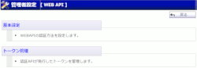
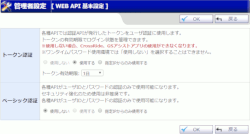
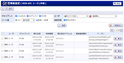

<!-- a要素のhref属性、img要素のsrc属性をそれぞれ指定します。 -->
<!-- 画像サイズはCSSで自動調整されます。 -->
    <p><a href="../help/h_api010.html">管理者設定<br></a></p>
    <p><a href="../help/h_api020.html">WEBAPI基本設定<br></a></p>
    <p><a href="../help/h_api030.html">トークン管理<br></a></p>
